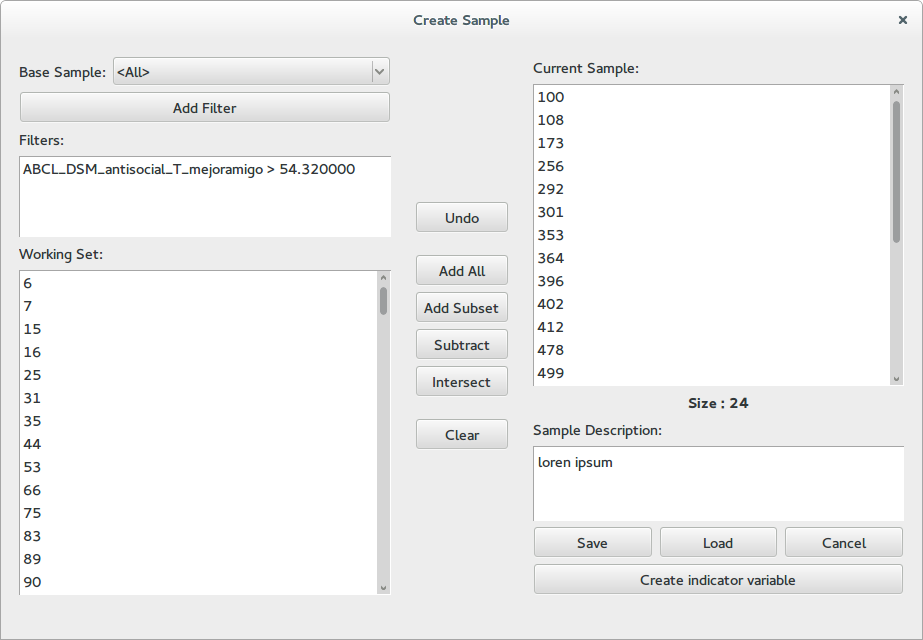

Creating Samples¶
Most applications let you work with a smaller set of subjects so that you can better focus your analyzes. To create such a list the sample creation dialog, which can be accessed by clicking new on all places where you are prompted to select a sample. For example you may click on subsamples in the main menu and afterwards click in new.
{kind=link}
This dialog contains three columns. At the left a working space, at the right the current sample and in the middle a series of bottoms for combining the two.
The working set¶
In this panel you apply filters to a base sample in order to get a reduced subset. To add a new filter click the Add Filter button. This will take you to a variable select dialog where you can additionally select a threshold for real variables or a set of valid labels for nominal variables. Only subjects that pass all the filters will be shown at the bottom list. To remove a filter right click on it and select remove from the context menu.
Combing working and current sets¶
The buttons in the middle of the dialog allow you to move information from the working set to the current sample.
- Undo: Restore the current sample to how it was before the last operation
- Add All: Add the complete working set to the current sample
- Add Subset: Add a random subset from the working set to the sample, a dialog will prompt you for the amount of subjects you which to add
- Subtract: Remove the subjects in the working set from the sample
- Intersect: Intersect the current sample with the working set, only subjects who appear in the working set will be kept in the sample.
- Clear: Clear the current sample
Additionally you can right click on any subject in the working set and from the context menu add him to the current sample. You can also right click on individual subjects in the current sample and remove them from the context menu.
The current sample¶
The right panel shows the subjects in the current sample and its size. Afterwards there is a field where you can write a description for the sample. It is useful to describe which operations you applied in order to generate the sample, or what is its intend.
Use the save button to save the sample into the database, it will prompt you for a name and allow you to review the description. The load button loads a set of subjects into the current sample list. The cancel button closes the dialog and discards the sample. Finally, the create indicator value allows you to create a nominal variable, which has label 1 for subjects in the sample, and 0 for subjects outside the sample.